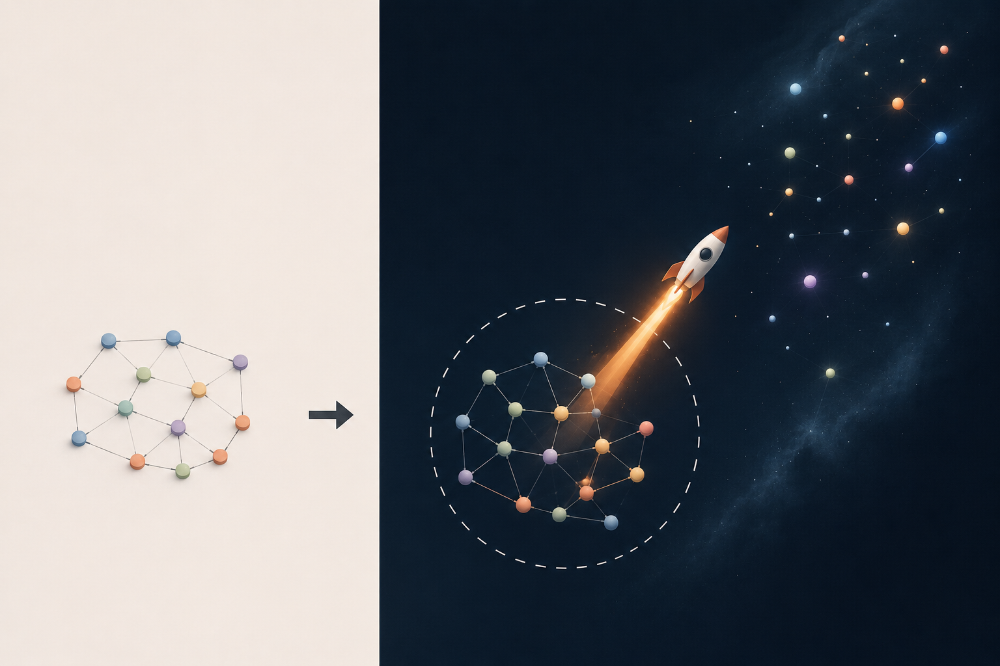

In four days, it will be my half-birthday. 22.5. ¼ to 90.
I keep staring at job postings, graduate applications, salary figures, and career trajectories. Part of me is always trying to estimate the same thing: how difficult is it, really, to learn one of these jobs, for myself, and for an artificial model.
The harder question is how to remain useful in a world increasingly populated by AI. It seems the safest place to stand is at the edge of what is known, where expertise is scarce and the questions themselves have not yet been answered. The value isn’t just in having knowledge. It’s in asking questions no one else has thought to ask.
I think that’s why I’ll always be drawn to writing music, stories, and essays. No one else has lived my life. No one else has access to this exact collection of experiences, obsessions, fears, and curiosities.
Can an LLM remember sitting in the back of my sixth-grade English classroom during reading time?
I can recall a day when two friends and I had finished reading early, so we were allowed to sit on the sofa in the back and chat quietly. We had a trendy English, ahem, Language Arts teacher. I asked them a question that seemed obvious to me:
“If you could get into a spaceship and fly interminably into space, just to see what’s out there, would you do it?”
I had been thinking about this query for a couple weeks before I brought it up. I had reasoned that taking a once-in-a-lifetime opportunity like that was in fact the only logical choice. I’ll try to recall the details of my sixth-grade reasoning:
- We are clueless about our meaning on Earth. Therefore, the only opportunity to discover meaning would be off Earth.
- Most lives will live a predictable Earthly path, and that is BORING!!
But my friends didn’t share my reasoning. Looking back, I think many of my peers were simply better at focusing on the practical world. My head was kind of always in the clouds.
Over time, I developed the ability to ground myself in reality. But when I’m alone, without a screen or a phone competing for my attention, I’m still that kid on the couch in the back of English class. To my sixth-grade self, the question wasn’t whether someone would board the spaceship. The question was why anyone would choose to stay behind.
Anyway, I got to writing this because I’m genuinely nervous about my place in a world increasingly shaped by AI. If you stare at the problem long enough, it’s not difficult to imagine a future where many jobs are performed by systems that combine large language models, robotics, and enough engineering to mimic much of what humans currently do.
Maybe the goal isn’t to compete with the machine on things it already knows. Maybe it’s to use it as fuel to propel you toward the places where nobody, machine or human, knows the answer yet.
So, what is a question that genuinely excites me?
Maybe it’s how humans learn. How can you implant semantic knowledge, and what are the limits to the usage of an external brain?
More specifically, how do we accelerate that process? What are the biological, computational, and environmental factors that determine how quickly a person acquires knowledge, skill, creativity, and wisdom? If there is a frontier that keeps pulling my attention, it might be that one.
But I can’t just sit with that question and admire it from the couch. That’s the trap I keep catching myself in: imagining the future instead of preparing for it. So here’s the actual takeaway, the part that isn’t hypothetical. I have to stop imagining what the future will be like and become learned no matter what. I have to study hard so I can be the one asking the questions, not just the one wondering, years from now, who got there first.
So, that’s what I’m going to try to focus my writing on for the next couple of pieces: less imagining, more becoming.
Here’s a rough, slightly ridiculous, AI-generated visual metaphor that motivates me: as your network of semantic knowledge grows, condensing into higher-order abstractions, it becomes something more than a collection of facts. It becomes a vehicle for exploring the unknown.

Thanks for reading,
Matt